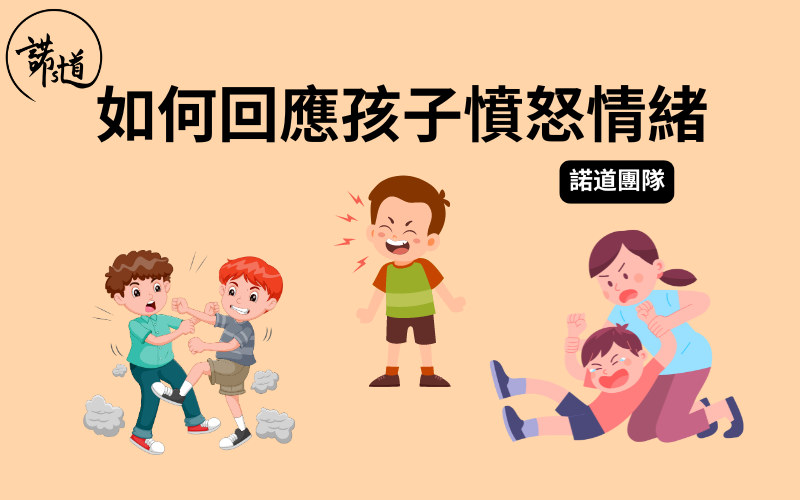

每個人與生俱來都有情緒感受，是用作回應世界的一種方式。情緒沒有好壞之分，每種情緒也帶有其功能及意義，驅使我們作出相應的行動；當中「憤怒」是我們常經驗的情緒，若控制得宜，憤怒能帶來勇氣與動力表達內心想法，保護自己、維護重視的東西；但若被憤怒淹蓋，會令人失去冷靜的頭腦，甚或為自己及身邊人帶來語言或身體上的傷害。
年幼的孩子在成長路上必然會面對開心、興奮、害怕、失望、惱怒、忟憎、擔心等不同感受；縱然面對情緒變化，唯說話並非孩子最能表達自己所思所想的方法；再者，孩子的腦部仍在發展階段，未完全掌握控制衝動的能力，當遇到情緒來襲尤其是「憤怒」時，他們會以最直接最快的表達方式
— 肢體動作來釋放感受，在大人眼中就變成「問題行為」了。
無論是否有特殊需要的小朋友，都需要學習以恰當方法展現及釋放情緒；而有語言發展遲緩的小朋友由於未能以說話清晰表達自己，會較易以「問題行為」即常⾒的「打人、尖叫、瞓地、喊」讓身邊人知道自己的需要。學習情緒管理不是一朝一夕的事情，孩子需要家長一直的陪伴與教導；以下是如何回應孩子憤怒情緒的建議步驟：
步驟一：家長先平靜內心，嘗試練習自我對話
家長能控制自己的情緒時，較能令孩子冷靜下來。
“BRING THE CALM, DON’T JOIN THE CHAOS” 緊記！孩子不是有心跟你作對，而是快被強烈情緒淹沒，正向你求助！家長第一步可在腦海中作以下自我對話讓自己冷靜下來：
「仔仔而家需要我幫忙」
「每個人都有情緒，係正常嘅」
「他仍然學習緊」
「而家仔仔好忟好嬲，如果我都嬲，只會令佢更嬲」
步驟⼆：接納孩子的憤怒情緒及為情緒命名
接納是允許孩子有憤怒的情緒，讓孩子知道情緒沒分對錯，由之引發出來的行為才有恰當與不恰當之分。家長可以用孩子能理解的字眼為當下的情緒命名：「媽媽知道，你而家好忟憎、好嬲！唔緊要，媽媽喺度陪你。」
過程中為孩子輸入情緒字眼，同時讓孩子了解有任何情緒感受都會被爸爸媽媽接納，而不會因為「嬲」就被認定為 「曳」、「唔聽話」，不會因為自己有負面情緒而失去父母的陪伴。
步驟三：教孩子如何安全地表達情緒
情緒爆發時不是一個說道理的好時機，當孩子經歷憤怒情緒時，需要的是來自父母的那份理解及容許。年幼的孩子可多用抱緊、掃背等身體接觸方式讓他們感受更實在的陪伴。冷靜下來後或⽇常平靜的時刻，父母可與孩子共讀情緒繪本、玩假裝遊戲及利用情緒面譜等⼯具去認識情緒及學習合宜的表達方式。每位孩子釋放及排解情緒的方法都不一樣，家長可與孩子一同探討屬於自己的表達方法，例如打波波、捏泥膠、深呼吸、喝一杯水等，為下一次情緒風暴作準備。
總結
憤怒是眾多情緒之一，與「開心」、「唔開心」、「興奮」、「失望」等同樣有其價值及功用。家長要先容許自身有不同情緒出現，再將這份「接納」延伸至孩子，協助孩子在面對任何一種情緒時，都能有相應的方法，並知道你那雙⼿會永遠作為他強大的安全基地。
把這篇⽂章分享給身邊跟你同樣關心孩子成長的朋友，讓我們一起和孩子健康快樂地成長。
如有任何問題或需要幫忙，歡迎你跟諾道團隊聯絡，我們樂意為你提供協助！